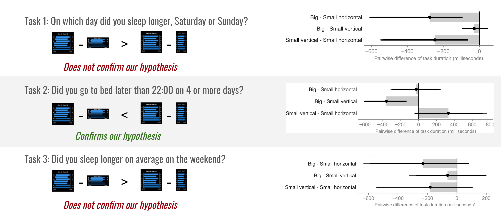

Fitness Tracker Visualizations

UX Research Intern
February 2019 - July 2019
INRIA, France
Fitness Tracker Visualizations
February 2019 - July 2019
INRIA, France
1. AIM
Understand how well can fitness tracker wearers read visualizations on small screens
2. METHODOLOGY
3. INTERVIEWS AND CARD SORTING
I conducted 10 semi-structured interviews with regular wearers of fitness trackers (e.g. Apple Watch, Fitbit) to find out how often they use their tracker, what types of data they track and which insights do they pay more attention to.
Participants started by drawing the visualizations they remembered seeing on their tracker.
In the card sorting exercise, participants organized 33 fitness data visualizations into self-defined groups.
What did we learn?
4/10 participants wanted to see detailed sleep visualizations on the tracker.
Majority (6/10) grouped cards based on temporal granularity (daily, weekly, monthly) aspect of data.
4. ONLINE SURVEY ON SLEEP VISUALIZATIONS
Because we saw an interest in exploring detailed sleep data in the interviews and in the card sorting exercise, we decided to focus our next step on the area of sleep tracking, particularly on the temporal granularity of sleep data. I deployed an online questionnaire on Google Forms which received 108 valid responses.
Responses to what kind of sleep data respondents would like to see directly on their tracker.
Preferences of 108 respondents for different types of sleep data. Orange borders highlight the most preferred designs.
What did we learn?
5 out of 8 times, the most preferred design were the same in big (smartwatch) and small (wristband) display sizes.
Preference of sleep data in different time granularities: Previous night > weekly overview > monthly overview > social comparison.
5. CONTROLLED EXPERIMENT
Since the display size of the visualizations often did not affect the preference of wearers, we were interested to find out if the display size affects readability of the weekly sleep visualization (floating bar chart), in terms of reading time and accuracy.
Results from 18 participants

What did we learn?
The difference in average response time per task for all sizes are ≤ 360 ms. Therefore, it is viable to display large bar charts on small screens.
It might be better to design for small-vertical than small-horizontal so that wearers don’t need to rotate their wrists.
6. CONCLUSION
We conducted three studies to learn about the perception of micro visualizations on fitness trackers.
Future research in this area could be to compare other types of fitness visualizations on small screens or test the glanceability of visualizations in the context of an activity.